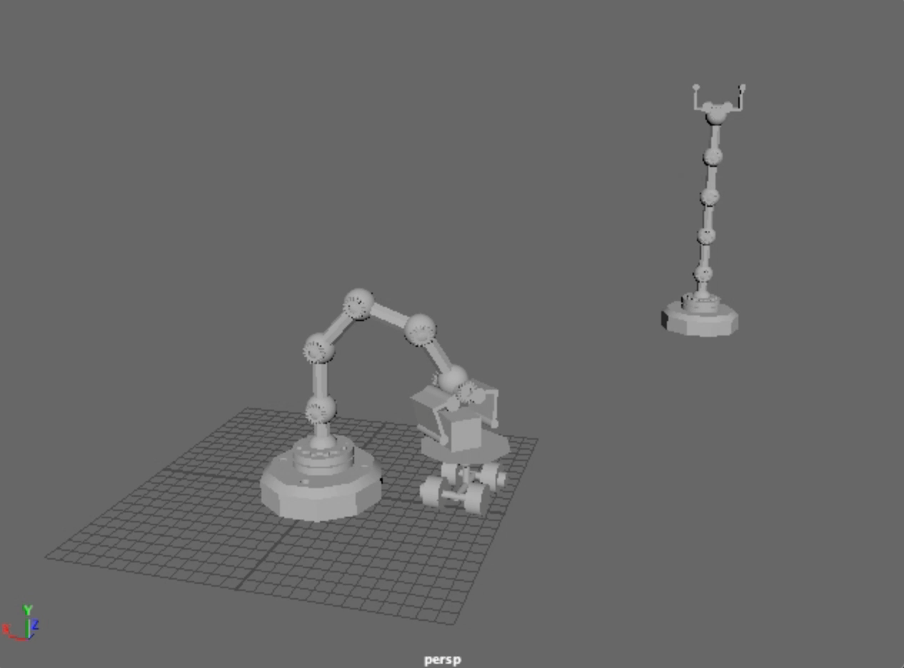

メインページへ戻る
Maya その１
キューブを使用して、そのキューブに何らかのアクションを加える動画を製作した
全部で20秒程度の短い動画であるが、その間にキューブが画面の端から端へ動く内容となっている
この動画制作では、機械の動きとキューブの動きを連動させるのが難しく、0.数秒単位で機械とキューブの動きを調整していった

手前の機械がキューブを掴むアクション
手前の機械がキューブを掴み、それを台車に乗せているシーン
その後、台車が奥の機械の元へ走っていく
奥の機械が台車のキューブを掴むアクション
台車によって奥へ運ばれたキューブを機械が掴んでいるシーン
この後、奥の機械が画面外へ向かってキューブを投げつけることで動画は終了する